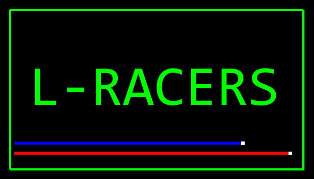
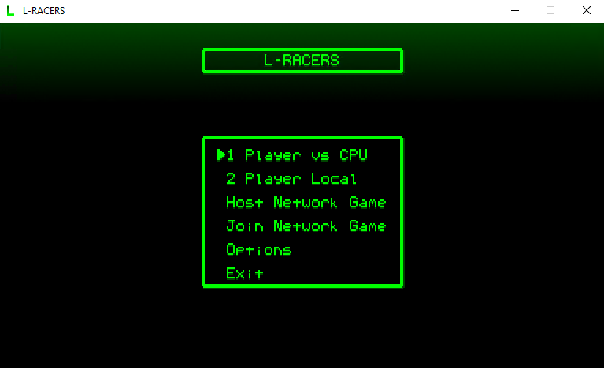
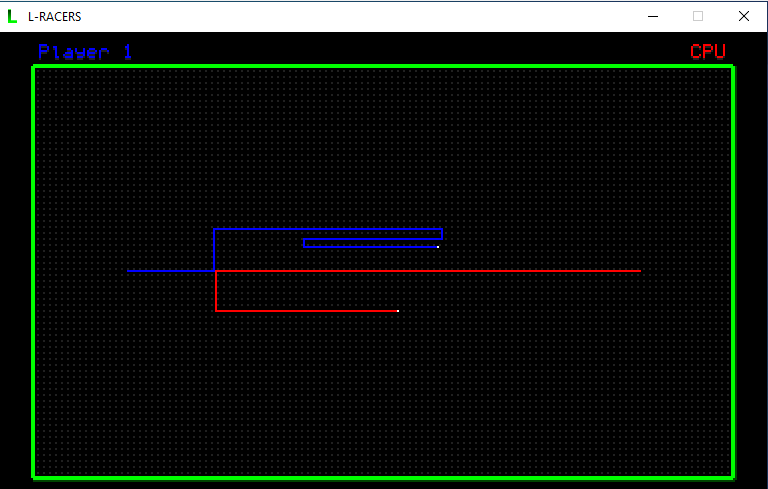
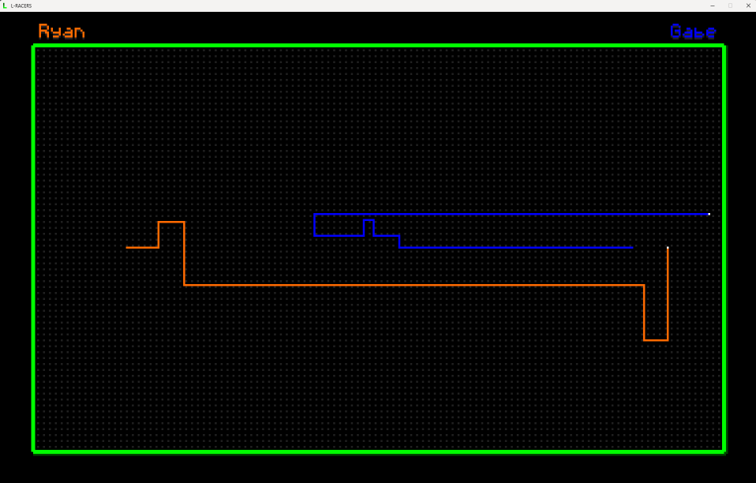
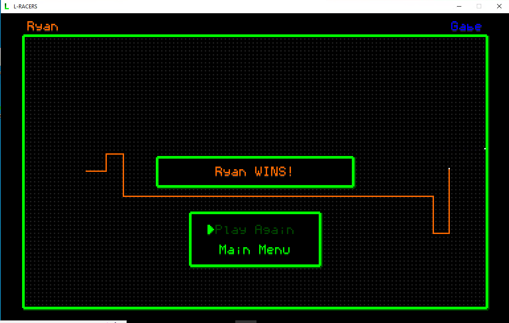

L-Racers is a minimalistic, retro, 1980s arcade-style old school game where you go head-to-head against another player (CPU or human) and be the last racer alive.
Use your keyboard or an XInput-compatible gamepad, grab a friend and play like it's 1985!
L-Racers has single player vs AI, 2-player local sharing the same keyboard or using two gamepads, 2-player over Local Area Network, or direct connection over the internet!




This game was created by Joseph Ryan Ries in 2022 as an homage to retro gaming.
Supported only on 64-bit Windows OS, for now.
Check out the L-Racers Steam page
HERE.
I am the sole developer of this indie game. If you need support, you can email me at and I'll do my best to help.
HOME